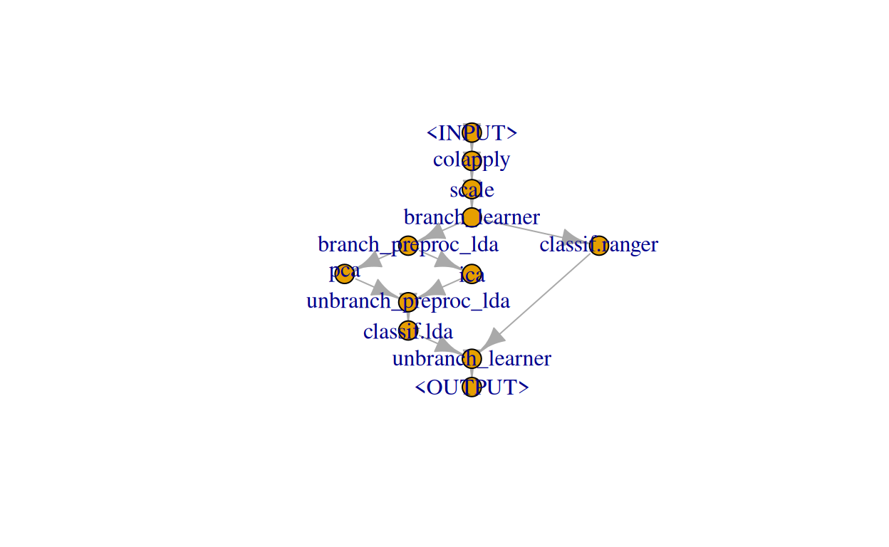

We show how to tune a complex graph for a single task.
In this use case we show how to tune a rather complex graph consisting of different preprocessing steps and different learners where each preprocessing step and learner itself has parameters that can be tuned. You will learn the following:
Graph that consists of two common preprocessing steps, then switches between two dimensionality reduction techniques followed by a Learner vs. no dimensionality reduction followed by another Learnergrid searchIdeally you already had a look at how to tune over multiple learners.
First, we load the packages we will need:
library(mlr3)
library(mlr3tuning)
library(mlr3pipelines)
library(mlr3learners)
library(mlr3misc)
library(paradox)We are going to work with some gene expression data included as a supplement in the bst package. The data consists of 2308 gene profiles in 63 training and 20 test samples. The following data preprocessing steps are done analogously as in vignette("khan", package = "bst"):
datafile = system.file("extdata", "supplemental_data", package = "bst")
dat0 = read.delim(datafile, header = TRUE, skip = 1)[, -(1:2)]
dat0 = t(dat0)
dat1 = dat0[rownames(dat0) %in%
c("TEST.9", "TEST.13", "TEST.5", "TEST.3", "TEST.11"), ]
dat2 = dat0[rownames(dat0) %nin%
c("TEST.9", "TEST.13", "TEST.5", "TEST.3", "TEST.11"), ]
dat = data.frame(rbind(dat2, dat1)[1:83, ])
dat$classes = as.factor(c(
substr(rownames(dat)[1:63], start = 1, stop = 2),
c("NB", "RM", "NB", "EW", "RM", "BL", "EW", "RM", "EW", "EW", "EW", "RM",
"BL", "RM", "NB", "NB", "NB", "NB", "BL", "EW")))We then construct our training and test Task :
task = TaskClassif$new("SRBCT", backend = dat, target = "classes")
task_train = task$clone(deep = TRUE)
task_train$filter(1:63)
task_test = task$clone(deep = TRUE)
task_test$filter(64:83)Our graph will start with log transforming the features (base 10), followed by scaling the features. Then, either a PCA or ICA is applied to extract principal/independent components followed by fitting a LDA or a ranger random forest is fitted directly (note that we probably could skip the transformation and scaling for the ranger). Regarding the PCA and ICA, both the number of principal/independent components are a tuning parameter. Regarding the LDA, we can further choose different methods for estimating the mean and variance and regarding the ranger we want to tune the mtry and num.tree parameters. Note that the PCA-LDA combination has already been successfully applied in different cancer diagnostic contexts when the feature space is of high dimensionality (Morais and Lima 2018).
To allow for switching between the PCA/ICA-LDA and ranger we can either use branching or proxy pipelines, i.e., PipeOpBranch and PipeOpUnbranch or PipeOpProxy. We will first cover branching in detail and later show how the same can be done using PipeOpProxy.
First, we have a look at the baseline classification accuracy of the LDA and ranger on the training task:
set.seed(1290)
base = benchmark(benchmark_grid(task_train,
learners = list(lrn("classif.lda"), lrn("classif.ranger")),
resamplings = rsmp("cv", folds = 3)))
INFO [22:52:14.632] Benchmark with 6 resampling iterations
INFO [22:52:14.661] Applying learner 'classif.lda' on task 'SRBCT' (iter 1/3)
INFO [22:52:15.901] Applying learner 'classif.lda' on task 'SRBCT' (iter 2/3)
INFO [22:52:16.931] Applying learner 'classif.lda' on task 'SRBCT' (iter 3/3)
INFO [22:52:17.969] Applying learner 'classif.ranger' on task 'SRBCT' (iter 1/3)
INFO [22:52:18.783] Applying learner 'classif.ranger' on task 'SRBCT' (iter 2/3)
INFO [22:52:18.940] Applying learner 'classif.ranger' on task 'SRBCT' (iter 3/3)
INFO [22:52:19.105] Finished benchmark
base$aggregate(measures = msr("classif.acc"))
nr resample_result task_id learner_id resampling_id iters classif.acc
1: 1 <ResampleResult> SRBCT classif.lda cv 3 0.6190476
2: 2 <ResampleResult> SRBCT classif.ranger cv 3 0.9682540The out of box ranger appears to already have good performance on the training task. Regarding the LDA, we do get a warning message, that some features are colinear. This strongly suggests to reduce the dimensionality of the feature space. Let’s see if we can get some better performance, at least for the LDA.
Our graph starts with log transforming the features (base 10), using PipeOpColApply, followed by scaling the features using PipeOpScale. Then, the first branch allows for switching between the PCA/ICA-LDA and ranger, and within PCA/ICA-LDA, the second branch allows for switching between PCA and ICA:
graph1 =
po("colapply", param_vals = list(
applicator = function(x) log(x, base = 10))
) %>>%
po("scale") %>>%
# pca/ica followed by lda vs. ranger
po("branch", id = "branch_learner", options = c("pca_ica_lda", "ranger")) %>>%
gunion(list(
po("branch", id = "branch_preproc_lda", options = c("pca", "ica")) %>>%
gunion(list(po("pca"), po("ica"))) %>>%
po("unbranch", id = "unbranch_preproc_lda") %>>% lrn("classif.lda"),
lrn("classif.ranger"))
) %>>%
po("unbranch", id = "unbranch_learner")Note that the names of the options within each branch are arbitrary, but ideally they describe what is happening. Therefore we go with "pca_ica_lda"/"ranger" and "pca"/"ica". The graph looks like the following:
graph1$plot()
We can inspect the parameters of the ParamSet of the graph to see which parameters can be set:
graph1$param_set$ids()
[1] "colapply.applicator"
[2] "colapply.affect_columns"
[3] "scale.center"
[4] "scale.scale"
[5] "scale.affect_columns"
[6] "branch_learner.selection"
[7] "branch_preproc_lda.selection"
[8] "pca.center"
[9] "pca.scale."
[10] "pca.rank."
[11] "pca.affect_columns"
[12] "ica.n.comp"
[13] "ica.alg.typ"
[14] "ica.fun"
[15] "ica.alpha"
[16] "ica.method"
[17] "ica.row.norm"
[18] "ica.maxit"
[19] "ica.tol"
[20] "ica.verbose"
[21] "ica.w.init"
[22] "ica.affect_columns"
[23] "classif.lda.prior"
[24] "classif.lda.tol"
[25] "classif.lda.method"
[26] "classif.lda.nu"
[27] "classif.lda.predict.method"
[28] "classif.lda.predict.prior"
[29] "classif.lda.dimen"
[30] "classif.ranger.num.trees"
[31] "classif.ranger.mtry"
[32] "classif.ranger.importance"
[33] "classif.ranger.write.forest"
[34] "classif.ranger.min.node.size"
[35] "classif.ranger.replace"
[36] "classif.ranger.sample.fraction"
[37] "classif.ranger.class.weights"
[38] "classif.ranger.splitrule"
[39] "classif.ranger.num.random.splits"
[40] "classif.ranger.split.select.weights"
[41] "classif.ranger.always.split.variables"
[42] "classif.ranger.respect.unordered.factors"
[43] "classif.ranger.scale.permutation.importance"
[44] "classif.ranger.keep.inbag"
[45] "classif.ranger.holdout"
[46] "classif.ranger.num.threads"
[47] "classif.ranger.save.memory"
[48] "classif.ranger.verbose"
[49] "classif.ranger.oob.error"
[50] "classif.ranger.max.depth"
[51] "classif.ranger.alpha"
[52] "classif.ranger.min.prop"
[53] "classif.ranger.regularization.factor"
[54] "classif.ranger.regularization.usedepth"
[55] "classif.ranger.seed"
[56] "classif.ranger.minprop"
[57] "classif.ranger.predict.all"
[58] "classif.ranger.se.method" Note that the id’s are prefixed by the respective PipeOp they belong to, e.g., pca.rank. refers to the rank. parameter of PipeOpPCA.
Our graph either fits a LDA after applying PCA or ICA or fits a ranger. These two selections each define selection parameters that we can tune. Moreover, within the respective PipeOp’s we want to tune the following parameters: pca.rank., ica.n.comp, classif.lda.method, classif.ranger.mtry, and classif.ranger.num.trees. The first two parameters are integers that in-principal could range from 1 to the number of features. However, for ICA, the upper bound must not exceed the number of observations and as we will later use 3-fold cross-validation as the resampling method for the tuning, we just set the upper bound to 30 (and do the same for the PCA). Regarding the classif.lda.method we will only be interested in moment estimation vs. minimum volume ellipsoid covariance estimation (mve). Moreover, we set the lower bound of classif.ranger.mtry to 200 (which is around the number of features divided by ten) and the upper bound to 1000.
tune_ps1 = ParamSet$new(list(
ParamFct$new("branch_learner.selection", levels = c("pca_ica_lda", "ranger")),
ParamFct$new("branch_preproc_lda.selection", levels = c("pca", "ica")),
ParamInt$new("pca.rank.", lower = 1, upper = 30),
ParamInt$new("ica.n.comp", lower = 1, upper = 30),
ParamFct$new("classif.lda.method", levels = c("moment", "mve")),
ParamInt$new("classif.ranger.mtry", lower = 200, upper = 1000),
ParamInt$new("classif.ranger.num.trees", lower = 500, upper = 2000))
)The parameter branch_learner.selection defines whether we go down the left (PCA/ICA followed by LDA) or the right branch (ranger). The parameter branch_preproc_lda.selection defines whether a PCA or ICA will be applied prior to the LDA. The other parameters directly belong to the ParamSet of the PCA/ICA/LDA/ranger. Note that it only makes sense to switch between PCA/ICA if the "pca_ica_lda" branch was selected beforehand. We have to specify this via:
tune_ps1$add_dep("branch_preproc_lda.selection",
on = "branch_learner.selection",
cond = CondEqual$new("pca_ica_lda"))Again, regarding the pca.rank. parameter, there is a dependency on that "pca" must have been selected in branch_preproc_lda.selection beforehand, which we have to explicitly specify:
tune_ps1$add_dep("pca.rank.", on = "branch_preproc_lda.selection", cond = CondEqual$new("pca"))The same holds for the following parameters analogously:
tune_ps1$add_dep("ica.n.comp",
on = "branch_preproc_lda.selection",
cond = CondEqual$new("ica"))
tune_ps1$add_dep("classif.lda.method",
on = "branch_learner.selection",
cond = CondEqual$new("pca_ica_lda"))
tune_ps1$add_dep("classif.ranger.mtry",
on = "branch_learner.selection",
cond = CondEqual$new("ranger"))
tune_ps1$add_dep("classif.ranger.num.trees",
on = "branch_learner.selection",
cond = CondEqual$new("ranger"))We can now tune the parameters of our graph as defined in the search space with respect to a measure. Here, we will use the classification accuracy. As a resampling method we use 3-fold cross-validation. We will use the TerminatorNone (i.e., no early termination) for terminating the tuning because we will apply a grid search:
set.seed(2409)
tune1 = TuningInstance$new(
task_train,
learner = graph1,
resampling = rsmp("cv", folds = 3),
measures = msr("classif.acc"),
param_set = tune_ps1,
terminator = term("none")
)We then perform a grid search using different a resolution of 4 for the numeric parameters. The grid being used will look like the following (note that the dependencies we specified above are handled automatically):
generate_design_grid(tune_ps1, resolution = 4)
<Design> with 32 rows:
branch_learner.selection branch_preproc_lda.selection pca.rank. ica.n.comp
1: pca_ica_lda pca 1 NA
2: pca_ica_lda pca 1 NA
3: pca_ica_lda pca 10 NA
4: pca_ica_lda pca 10 NA
5: pca_ica_lda pca 20 NA
6: pca_ica_lda pca 20 NA
7: pca_ica_lda pca 30 NA
8: pca_ica_lda pca 30 NA
9: pca_ica_lda ica NA 1
10: pca_ica_lda ica NA 1
11: pca_ica_lda ica NA 10
12: pca_ica_lda ica NA 10
13: pca_ica_lda ica NA 20
14: pca_ica_lda ica NA 20
15: pca_ica_lda ica NA 30
16: pca_ica_lda ica NA 30
17: ranger <NA> NA NA
18: ranger <NA> NA NA
19: ranger <NA> NA NA
20: ranger <NA> NA NA
21: ranger <NA> NA NA
22: ranger <NA> NA NA
23: ranger <NA> NA NA
24: ranger <NA> NA NA
25: ranger <NA> NA NA
26: ranger <NA> NA NA
27: ranger <NA> NA NA
28: ranger <NA> NA NA
29: ranger <NA> NA NA
30: ranger <NA> NA NA
31: ranger <NA> NA NA
32: ranger <NA> NA NA
branch_learner.selection branch_preproc_lda.selection pca.rank. ica.n.comp
classif.lda.method classif.ranger.mtry classif.ranger.num.trees
1: moment NA NA
2: mve NA NA
3: moment NA NA
4: mve NA NA
5: moment NA NA
6: mve NA NA
7: moment NA NA
8: mve NA NA
9: moment NA NA
10: mve NA NA
11: moment NA NA
12: mve NA NA
13: moment NA NA
14: mve NA NA
15: moment NA NA
16: mve NA NA
17: <NA> 200 500
18: <NA> 200 1000
19: <NA> 200 1500
20: <NA> 200 2000
21: <NA> 466 500
22: <NA> 466 1000
23: <NA> 466 1500
24: <NA> 466 2000
25: <NA> 733 500
26: <NA> 733 1000
27: <NA> 733 1500
28: <NA> 733 2000
29: <NA> 1000 500
30: <NA> 1000 1000
31: <NA> 1000 1500
32: <NA> 1000 2000
classif.lda.method classif.ranger.mtry classif.ranger.num.treesBefore starting the tuning we set some logging thresholds:
lgr::get_logger("mlr3")$set_threshold("warn")
lgr::get_logger("mlr3tuning")$set_threshold("warn")
tnr("grid_search", resolution = 4)$tune(tune1)Now, we can inspect the results ordered by the classification accuracy:
tune1_results = tune1$archive(unnest = "params")
tune1_results[order(classif.acc), ]
nr batch_nr resample_result task_id
1: 20 20 <ResampleResult> SRBCT
2: 24 24 <ResampleResult> SRBCT
3: 1 1 <ResampleResult> SRBCT
4: 10 10 <ResampleResult> SRBCT
5: 30 30 <ResampleResult> SRBCT
6: 7 7 <ResampleResult> SRBCT
7: 11 11 <ResampleResult> SRBCT
8: 23 23 <ResampleResult> SRBCT
9: 2 2 <ResampleResult> SRBCT
10: 6 6 <ResampleResult> SRBCT
11: 13 13 <ResampleResult> SRBCT
12: 15 15 <ResampleResult> SRBCT
13: 3 3 <ResampleResult> SRBCT
14: 12 12 <ResampleResult> SRBCT
15: 14 14 <ResampleResult> SRBCT
16: 25 25 <ResampleResult> SRBCT
17: 4 4 <ResampleResult> SRBCT
18: 5 5 <ResampleResult> SRBCT
19: 8 8 <ResampleResult> SRBCT
20: 9 9 <ResampleResult> SRBCT
21: 16 16 <ResampleResult> SRBCT
22: 17 17 <ResampleResult> SRBCT
23: 18 18 <ResampleResult> SRBCT
24: 19 19 <ResampleResult> SRBCT
25: 21 21 <ResampleResult> SRBCT
26: 22 22 <ResampleResult> SRBCT
27: 26 26 <ResampleResult> SRBCT
28: 27 27 <ResampleResult> SRBCT
29: 28 28 <ResampleResult> SRBCT
30: 29 29 <ResampleResult> SRBCT
31: 31 31 <ResampleResult> SRBCT
32: 32 32 <ResampleResult> SRBCT
nr batch_nr resample_result task_id
learner_id
1: colapply.scale.branch_learner.branch_preproc_lda.classif.ranger.pca.ica.unbranch_preproc_lda.classif.lda.unbranch_learner
2: colapply.scale.branch_learner.branch_preproc_lda.classif.ranger.pca.ica.unbranch_preproc_lda.classif.lda.unbranch_learner
3: colapply.scale.branch_learner.branch_preproc_lda.classif.ranger.pca.ica.unbranch_preproc_lda.classif.lda.unbranch_learner
4: colapply.scale.branch_learner.branch_preproc_lda.classif.ranger.pca.ica.unbranch_preproc_lda.classif.lda.unbranch_learner
5: colapply.scale.branch_learner.branch_preproc_lda.classif.ranger.pca.ica.unbranch_preproc_lda.classif.lda.unbranch_learner
6: colapply.scale.branch_learner.branch_preproc_lda.classif.ranger.pca.ica.unbranch_preproc_lda.classif.lda.unbranch_learner
7: colapply.scale.branch_learner.branch_preproc_lda.classif.ranger.pca.ica.unbranch_preproc_lda.classif.lda.unbranch_learner
8: colapply.scale.branch_learner.branch_preproc_lda.classif.ranger.pca.ica.unbranch_preproc_lda.classif.lda.unbranch_learner
9: colapply.scale.branch_learner.branch_preproc_lda.classif.ranger.pca.ica.unbranch_preproc_lda.classif.lda.unbranch_learner
10: colapply.scale.branch_learner.branch_preproc_lda.classif.ranger.pca.ica.unbranch_preproc_lda.classif.lda.unbranch_learner
11: colapply.scale.branch_learner.branch_preproc_lda.classif.ranger.pca.ica.unbranch_preproc_lda.classif.lda.unbranch_learner
12: colapply.scale.branch_learner.branch_preproc_lda.classif.ranger.pca.ica.unbranch_preproc_lda.classif.lda.unbranch_learner
13: colapply.scale.branch_learner.branch_preproc_lda.classif.ranger.pca.ica.unbranch_preproc_lda.classif.lda.unbranch_learner
14: colapply.scale.branch_learner.branch_preproc_lda.classif.ranger.pca.ica.unbranch_preproc_lda.classif.lda.unbranch_learner
15: colapply.scale.branch_learner.branch_preproc_lda.classif.ranger.pca.ica.unbranch_preproc_lda.classif.lda.unbranch_learner
16: colapply.scale.branch_learner.branch_preproc_lda.classif.ranger.pca.ica.unbranch_preproc_lda.classif.lda.unbranch_learner
17: colapply.scale.branch_learner.branch_preproc_lda.classif.ranger.pca.ica.unbranch_preproc_lda.classif.lda.unbranch_learner
18: colapply.scale.branch_learner.branch_preproc_lda.classif.ranger.pca.ica.unbranch_preproc_lda.classif.lda.unbranch_learner
19: colapply.scale.branch_learner.branch_preproc_lda.classif.ranger.pca.ica.unbranch_preproc_lda.classif.lda.unbranch_learner
20: colapply.scale.branch_learner.branch_preproc_lda.classif.ranger.pca.ica.unbranch_preproc_lda.classif.lda.unbranch_learner
21: colapply.scale.branch_learner.branch_preproc_lda.classif.ranger.pca.ica.unbranch_preproc_lda.classif.lda.unbranch_learner
22: colapply.scale.branch_learner.branch_preproc_lda.classif.ranger.pca.ica.unbranch_preproc_lda.classif.lda.unbranch_learner
23: colapply.scale.branch_learner.branch_preproc_lda.classif.ranger.pca.ica.unbranch_preproc_lda.classif.lda.unbranch_learner
24: colapply.scale.branch_learner.branch_preproc_lda.classif.ranger.pca.ica.unbranch_preproc_lda.classif.lda.unbranch_learner
25: colapply.scale.branch_learner.branch_preproc_lda.classif.ranger.pca.ica.unbranch_preproc_lda.classif.lda.unbranch_learner
26: colapply.scale.branch_learner.branch_preproc_lda.classif.ranger.pca.ica.unbranch_preproc_lda.classif.lda.unbranch_learner
27: colapply.scale.branch_learner.branch_preproc_lda.classif.ranger.pca.ica.unbranch_preproc_lda.classif.lda.unbranch_learner
28: colapply.scale.branch_learner.branch_preproc_lda.classif.ranger.pca.ica.unbranch_preproc_lda.classif.lda.unbranch_learner
29: colapply.scale.branch_learner.branch_preproc_lda.classif.ranger.pca.ica.unbranch_preproc_lda.classif.lda.unbranch_learner
30: colapply.scale.branch_learner.branch_preproc_lda.classif.ranger.pca.ica.unbranch_preproc_lda.classif.lda.unbranch_learner
31: colapply.scale.branch_learner.branch_preproc_lda.classif.ranger.pca.ica.unbranch_preproc_lda.classif.lda.unbranch_learner
32: colapply.scale.branch_learner.branch_preproc_lda.classif.ranger.pca.ica.unbranch_preproc_lda.classif.lda.unbranch_learner
learner_id
resampling_id iters tune_x warnings errors classif.acc colapply.applicator
1: cv 3 <list> 0 0 0.2380952 <function>
2: cv 3 <list> 0 0 0.2380952 <function>
3: cv 3 <list> 0 0 0.2698413 <function>
4: cv 3 <list> 0 0 0.2698413 <function>
5: cv 3 <list> 0 0 0.8412698 <function>
6: cv 3 <list> 0 0 0.8730159 <function>
7: cv 3 <list> 0 0 0.8730159 <function>
8: cv 3 <list> 0 0 0.8730159 <function>
9: cv 3 <list> 0 0 0.9206349 <function>
10: cv 3 <list> 0 0 0.9206349 <function>
11: cv 3 <list> 0 0 0.9365079 <function>
12: cv 3 <list> 0 0 0.9523810 <function>
13: cv 3 <list> 0 0 0.9682540 <function>
14: cv 3 <list> 0 0 0.9682540 <function>
15: cv 3 <list> 0 0 0.9841270 <function>
16: cv 3 <list> 0 0 0.9841270 <function>
17: cv 3 <list> 0 0 1.0000000 <function>
18: cv 3 <list> 0 0 1.0000000 <function>
19: cv 3 <list> 0 0 1.0000000 <function>
20: cv 3 <list> 0 0 1.0000000 <function>
21: cv 3 <list> 0 0 1.0000000 <function>
22: cv 3 <list> 0 0 1.0000000 <function>
23: cv 3 <list> 0 0 1.0000000 <function>
24: cv 3 <list> 0 0 1.0000000 <function>
25: cv 3 <list> 0 0 1.0000000 <function>
26: cv 3 <list> 0 0 1.0000000 <function>
27: cv 3 <list> 0 0 1.0000000 <function>
28: cv 3 <list> 0 0 1.0000000 <function>
29: cv 3 <list> 0 0 1.0000000 <function>
30: cv 3 <list> 0 0 1.0000000 <function>
31: cv 3 <list> 0 0 1.0000000 <function>
32: cv 3 <list> 0 0 1.0000000 <function>
resampling_id iters tune_x warnings errors classif.acc colapply.applicator
branch_learner.selection branch_preproc_lda.selection ica.n.comp ica.method
1: pca_ica_lda ica 1 C
2: pca_ica_lda pca NA C
3: pca_ica_lda ica 1 C
4: pca_ica_lda pca NA C
5: pca_ica_lda ica 10 C
6: pca_ica_lda pca NA C
7: pca_ica_lda pca NA C
8: pca_ica_lda ica 10 C
9: pca_ica_lda pca NA C
10: pca_ica_lda ica 30 C
11: pca_ica_lda ica 20 C
12: pca_ica_lda pca NA C
13: pca_ica_lda pca NA C
14: pca_ica_lda ica 20 C
15: pca_ica_lda ica 30 C
16: pca_ica_lda pca NA C
17: ranger pca NA C
18: ranger pca NA C
19: ranger pca NA C
20: ranger pca NA C
21: ranger pca NA C
22: ranger pca NA C
23: ranger pca NA C
24: ranger pca NA C
25: ranger pca NA C
26: ranger pca NA C
27: ranger pca NA C
28: ranger pca NA C
29: ranger pca NA C
30: ranger pca NA C
31: ranger pca NA C
32: ranger pca NA C
branch_learner.selection branch_preproc_lda.selection ica.n.comp ica.method
classif.lda.method pca.rank. classif.ranger.num.trees classif.ranger.mtry
1: moment NA NA NA
2: moment 1 NA NA
3: mve NA NA NA
4: mve 1 NA NA
5: mve NA NA NA
6: mve 10 NA NA
7: moment 10 NA NA
8: moment NA NA NA
9: mve 30 NA NA
10: mve NA NA NA
11: mve NA NA NA
12: mve 20 NA NA
13: moment 20 NA NA
14: moment NA NA NA
15: moment NA NA NA
16: moment 30 NA NA
17: <NA> NA 1000 200
18: <NA> NA 1000 1000
19: <NA> NA 500 733
20: <NA> NA 2000 200
21: <NA> NA 2000 1000
22: <NA> NA 1500 466
23: <NA> NA 1000 733
24: <NA> NA 2000 466
25: <NA> NA 500 1000
26: <NA> NA 1500 1000
27: <NA> NA 500 200
28: <NA> NA 500 466
29: <NA> NA 1500 733
30: <NA> NA 1500 200
31: <NA> NA 2000 733
32: <NA> NA 1000 466
classif.lda.method pca.rank. classif.ranger.num.trees classif.ranger.mtryWe achieve very good accuracy using ranger with a higher number of mtry and num.trees (which in hindsight makes sense because our feature space is high dimensional). However, the LDA also shows very good accuracy when combined with PCA or ICA retaining 30 components.
For now, we decide to use ranger with mtry set to 200 and num.trees set to 1000.
Setting these parameters manually in our graph, then training on the training task and predicting on the test task yields an accuracy of:
graph1$param_set$values$branch_learner.selection = "ranger"
graph1$param_set$values$classif.ranger.mtry = 200
graph1$param_set$values$classif.ranger.num.trees = 1000
graph1$train(task_train)
$unbranch_learner.output
NULL
msr("classif.acc")$score(graph1$predict(task_test)[[1L]])
[1] 1Note that we also could have wrapped our graph in a GraphLearner and proceeded to use this as a learner in an AutoTuner.
Instead of using branches to split our graph with respect to the learner and preprocessing options, we can also use PipeOpProxy. PipeOpProxy accepts a single content parameter that can contain any other PipeOp or Graph. This is extremely flexible in the sense that we do not have to specify our options during construction. However, the parameters of the contained PipeOp or Graph are no longer directly contained in the ParamSet of the resulting graph. Therefore, when tuning the graph, we do have to make use of a trafo function.
graph2 =
po("colapply", param_vals = list(
applicator = function(x) log(x, base = 10))
) %>>%
po("scale") %>>%
po("proxy")This graph now looks like the following:
graph2$plot()At first, this may look like a linear graph. However, as the content parameter of PipeOpProxy can be tuned and set to contain any other PipeOp or Graph, this will allow for a similar non-linear graph as when doing branching.
graph2$param_set$ids()
[1] "colapply.applicator" "colapply.affect_columns"
[3] "scale.center" "scale.scale"
[5] "scale.affect_columns" "proxy.content" We can tune the graph by using the same search space as before. However, here the trafo function is of central importance to actually set our options and parameters:
tune_ps2 = tune_ps1$clone(deep = TRUE)The trafo function does all the work, i.e., selecting either the PCA/ICA-LDA or ranger as the proxy.content as well as setting the parameters of the respective preprocessing PipeOps and Learners.
proxy_options = list(
pca_ica_lda =
ppl("branch", graphs = list(pca = po("pca"), ica = po("ica"))) %>>%
lrn("classif.lda"),
ranger = lrn("classif.ranger")
)Note that above we made use of the branch ppl which is syntactic sugar for doing branching. Of course we also could have use another nested PipeOpProxy to specify the preprocessing options ("pca" vs. "ica") within proxy_options if for some reason we do not want to do branching at all. The trafo function then selects one of the proxy_options and sets the respective parameters for the PCA, ICA, LDA and ranger. Here, the argument x is a list which will contain sampled/selected parameters from our ParamSet (in our case, tune_ps2).
tune_ps2$trafo = function(x, param_set) {
values_out = list(proxy.content = proxy_options[[x$branch_learner.selection]])
if (x$branch_learner.selection == "pca_ica_lda") {
# pca_ica_lda
values_out$proxy.content$param_set$values$branch.selection = x$branch_preproc_lda.selection
if (x$branch_preproc_lda.selection == "pca") {
values_out$proxy.content$param_set$values$pca.rank. = x$pca.rank.
} else {
values_out$proxy.content$param_set$values$ica.n.comp = x$ica.n.comp
}
values_out$proxy.content$param_set$values$classif.lda.method = x$classif.lda.method
} else {
# ranger
values_out$proxy.content$param_set$values$mtry = x$classif.ranger.mtry
values_out$proxy.content$param_set$values$num.trees = x$classif.ranger.num.trees
}
values_out
}Tuning then can be carried out analogously as done above (note that setting unnest = "tune_x" allows us to inspect the parameters as they were selected prior to the trafo function being applied):
set.seed(2409)
tune2 = TuningInstance$new(
task_train,
learner = graph2,
resampling = rsmp("cv", folds = 3),
measures = msr("classif.acc"),
param_set = tune_ps2,
terminator = term("none")
)
tnr("grid_search", resolution = 4)$tune(tune2)
tune2_results = tune2$archive(unnest = "tune_x")
tune2_results[order(classif.acc), ]Morais, Camilo LM, and Kássio MG Lima. 2018. “Principal Component Analysis with Linear and Quadratic Discriminant Analysis for Identification of Cancer Samples Based on Mass Spectrometry.” Journal of the Brazilian Chemical Society 29 (3): 472–81. https://doi.org/10.21577/0103-5053.20170159.
For attribution, please cite this work as
Schneider (2020, May 7). mlr3gallery: Tuning a complex graph. Retrieved from https://mlr3gallery.mlr-org.com/posts/2020-05-07-tuning-a-complex-graph/
BibTeX citation
@misc{schneider2020tuning,
author = {Schneider, Lennart},
title = {mlr3gallery: Tuning a complex graph},
url = {https://mlr3gallery.mlr-org.com/posts/2020-05-07-tuning-a-complex-graph/},
year = {2020}
}